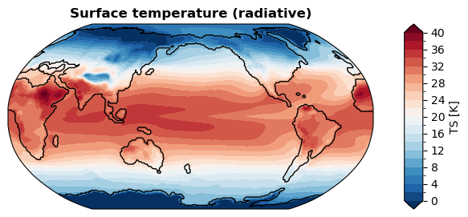
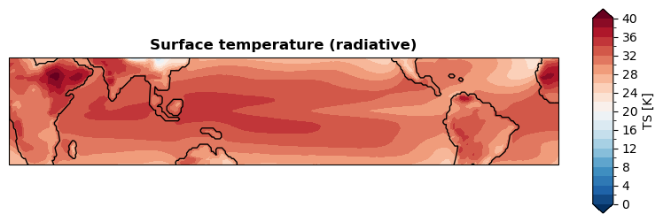
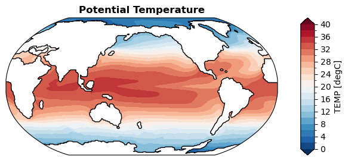
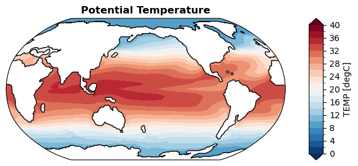
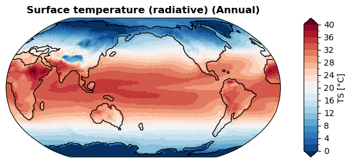
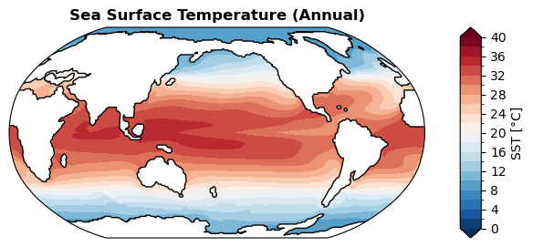

Visualization of unstructured grid maps#
[1]:
%load_ext autoreload
%autoreload 2
import os
import numpy as np
os.chdir('/glade/u/home/fengzhu/Github/x4c/docsrc/notebooks')
import x4c
print(x4c.__version__)
2024.8.13
[2]:
dirpath = '/glade/campaign/univ/ubrn0018/fengzhu/CESM_output/timeseries/b.e13.B1850C5.ne30_g16.icesm131_d18O_fixer.Miocene.3xCO2.006'
case = x4c.Timeseries(dirpath, grid_dict={'atm': 'ne30np4', 'ocn': 'g16'})
>>> case.root_dir: /glade/campaign/univ/ubrn0018/fengzhu/CESM_output/timeseries/b.e13.B1850C5.ne30_g16.icesm131_d18O_fixer.Miocene.3xCO2.006
>>> case.path_pattern: comp/proc/tseries/month_1/casename.mdl.h_str.vn.timespan.nc
>>> case.grid_dict: {'atm': 'ne30np4', 'ocn': 'g16', 'lnd': 'ne30np4', 'rof': 'ne30np4', 'ice': 'g16'}
>>> case.vars_info created
CAM-SE#
[3]:
case.load('TS')
da_tas = case.ds['TS'].x['TS'].mean('time')-273.15
da_tas
>>> case.ds["TS"] created
[3]:
<xarray.DataArray 'TS' (ncol: 48602)> Size: 194kB
array([26.467163, 26.114838, 25.527252, ..., 24.563751, 24.704865,
25.221466], dtype=float32)
Dimensions without coordinates: ncol
Attributes:
units: K
long_name: Surface temperature (radiative)
cell_methods: time: mean
path: /glade/campaign/univ/ubrn0018/fengzhu/CESM_output/timeseri...
gw: <xarray.DataArray 'gw' (ncol: 48602)> Size: 389kB\narray([...
lat: <xarray.DataArray 'lat' (ncol: 48602)> Size: 389kB\n[48602...
lon: <xarray.DataArray 'lon' (ncol: 48602)> Size: 389kB\n[48602...
comp: atm
grid: ne30np4[4]:
case.load('TEMP')
da_sst = case.ds['TEMP'].x['TEMP'].mean('time').isel(z_t=0)
da_sst
>>> case.ds["TEMP"] created
[4]:
<xarray.DataArray 'TEMP' (nlat: 384, nlon: 320)> Size: 492kB
array([[nan, nan, nan, ..., nan, nan, nan],
[nan, nan, nan, ..., nan, nan, nan],
[nan, nan, nan, ..., nan, nan, nan],
...,
[nan, nan, nan, ..., nan, nan, nan],
[nan, nan, nan, ..., nan, nan, nan],
[nan, nan, nan, ..., nan, nan, nan]], dtype=float32)
Coordinates:
TLAT (nlat, nlon) float64 983kB ...
TLONG (nlat, nlon) float64 983kB ...
ULAT (nlat, nlon) float64 983kB ...
ULONG (nlat, nlon) float64 983kB ...
z_t float32 4B 500.0
Dimensions without coordinates: nlat, nlon
Attributes:
long_name: Potential Temperature
units: degC
grid_loc: 3111
cell_methods: time: mean
path: /glade/campaign/univ/ubrn0018/fengzhu/CESM_output/timeseri...
gw: <xarray.DataArray 'gw' (nlat: 384, nlon: 320)> Size: 983kB...
lat: <xarray.DataArray 'lat' (nlat: 384, nlon: 320)> Size: 983k...
lon: <xarray.DataArray 'lon' (nlat: 384, nlon: 320)> Size: 983k...
dz: <xarray.DataArray 'dz' (z_t: 60)> Size: 240B\n[60 values w...
comp: ocn
grid: g16[5]:
da_sst_rgd = da_sst.x.regrid()
da_sst_rgd
[5]:
<xarray.DataArray 'TEMP' (lat: 180, lon: 360)> Size: 259kB
array([[ nan, nan, nan, ..., nan, nan,
nan],
[ nan, nan, nan, ..., nan, nan,
nan],
[ nan, nan, nan, ..., nan, nan,
nan],
...,
[4.4343476, 4.4262424, 4.4181333, ..., 4.458625 , 4.450539 ,
4.4424477],
[4.5288787, 4.5245633, 4.520289 , ..., 4.542059 , 4.5376277,
4.533234 ],
[4.6478705, 4.6466527, 4.6454563, ..., 4.651822 , 4.6504927,
4.649157 ]], dtype=float32)
Coordinates:
* lat (lat) float64 1kB -89.5 -88.5 -87.5 -86.5 ... 86.5 87.5 88.5 89.5
* lon (lon) float64 3kB 0.5 1.5 2.5 3.5 4.5 ... 356.5 357.5 358.5 359.5
z_t float32 4B 500.0
Attributes:
long_name: Potential Temperature
units: degC
grid_loc: 3111
cell_methods: time: mean
path: /glade/campaign/univ/ubrn0018/fengzhu/CESM_output/timeseri...
gw: <xarray.DataArray 'gw' (lat: 180, lon: 360)> Size: 518kB\n...
dz: <xarray.DataArray 'dz' (z_t: 60)> Size: 240B\n[60 values w...
comp: ocn
grid: g16With regridding#
[ ]:
%%time
fig, ax = da_tas.x.regrid().x.plot(
levels=np.linspace(0, 40, 21),
cbar_kwargs={
'ticks': np.linspace(0, 40, 11),
},
ssv=da_sst_rgd, # coastline based on given sea surface variable
)
CPU times: user 1.07 s, sys: 3.85 ms, total: 1.07 s
Wall time: 1.08 s

[ ]:
fig, ax = da_tas.x.regrid().x.plot(
levels=np.linspace(0, 40, 21),
cbar_kwargs={
'ticks': np.linspace(0, 40, 11),
},
ssv=da_sst_rgd, # coastline based on given sea surface variable
latlon_range=(-30, 30, -180, 180), # plot tripical region
)

Without regridding#
[ ]:
%%time
fig, ax = da_tas.x.plot(
levels=np.linspace(0, 40, 21),
cbar_kwargs={
'ticks': np.linspace(0, 40, 11),
},
ssv=da_sst_rgd, # coastline based on given sea surface variable
)
CPU times: user 287 ms, sys: 0 ns, total: 287 ms
Wall time: 286 ms
[ ]:
fig, ax = da_tas.x.plot(
levels=np.linspace(0, 40, 21),
cbar_kwargs={
'ticks': np.linspace(0, 40, 11),
},
ssv=da_sst_rgd, # coastline based on given sea surface variable
latlon_range=(-30, 30, -180, 180), # plot tripical region
)
UXarray vs x4c vs x4c-regrid#
[ ]:
%%time
fig, ax = da_tas.x.plot(
levels=np.linspace(0, 40, 21),
cbar_kwargs={
'ticks': np.linspace(0, 40, 11),
},
ssv=da_sst_rgd, # coastline based on given sea surface variable
ux=True, # use UXarray
)
CPU times: user 1.22 s, sys: 11.8 ms, total: 1.23 s
Wall time: 1.17 s

[ ]:
%%time
fig, ax = da_tas.x.plot(
levels=np.linspace(0, 40, 21),
cbar_kwargs={
'ticks': np.linspace(0, 40, 11),
},
ssv=da_sst_rgd, # coastline based on given sea surface variable
ux=False, # don't use UXarray
)
CPU times: user 297 ms, sys: 75 μs, total: 297 ms
Wall time: 296 ms

[ ]:
%%time
fig, ax = da_tas.x.regrid().x.plot(
levels=np.linspace(0, 40, 21),
cbar_kwargs={
'ticks': np.linspace(0, 40, 11),
},
ssv=da_sst_rgd, # coastline based on given sea surface variable
)
CPU times: user 1.08 s, sys: 116 μs, total: 1.08 s
Wall time: 1.08 s

POP#
With regridding#
[29]:
%%time
fig, ax = da_sst.x.regrid().x.plot(
levels=np.linspace(0, 40, 21),
cbar_kwargs={
'ticks': np.linspace(0, 40, 11),
},
)
CPU times: user 2.39 s, sys: 19.8 ms, total: 2.41 s
Wall time: 2.41 s

Without regridding#
[ ]:
%%time
fig, ax = da_sst.x.plot(
levels=np.linspace(0, 40, 21),
cbar_kwargs={
'ticks': np.linspace(0, 40, 11),
},
)
CPU times: user 579 ms, sys: 183 μs, total: 579 ms
Wall time: 577 ms

Case#
Air surface temperature#
[31]:
%%time
# the first time will be slower due to ssv calculation
# ssv will be cached afterwards
fig, ax = case.plot('TS:ann', regrid=True, recalculate_ssv=True)
CPU times: user 4.23 s, sys: 47.8 ms, total: 4.28 s
Wall time: 4.29 s
[32]:
%%time
fig, ax = case.plot('TS:ann', regrid=True)
CPU times: user 1.08 s, sys: 3.61 ms, total: 1.08 s
Wall time: 1.08 s
[33]:
%%time
fig, ax = case.plot('TS:ann')
CPU times: user 289 ms, sys: 54 μs, total: 289 ms
Wall time: 288 ms

[34]:
%%time
fig, ax = case.plot('TS:ann', ux=True)
CPU times: user 1.2 s, sys: 15 ms, total: 1.22 s
Wall time: 1.16 s

Sea surface temperature#
[ ]:
%%time
fig, ax = case.plot('SST:ann', regrid=True) # with regridding
CPU times: user 2.43 s, sys: 20 ms, total: 2.45 s
Wall time: 2.45 s

[59]:
%%time
fig, ax = case.plot('SST:ann') # without regridding
CPU times: user 593 ms, sys: 82 μs, total: 593 ms
Wall time: 593 ms
